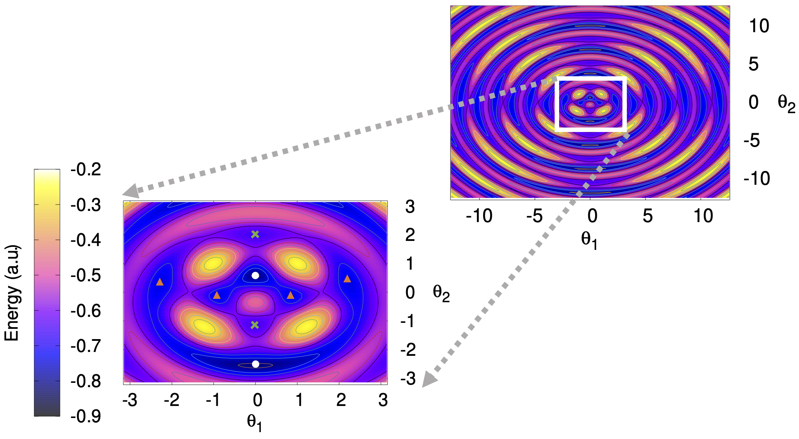

(8)S. Gulania , J. D. Whitfield, ''Limitations of Hartree-Fock with quantum resources'', arXiv:2007.09806 (2020)

(7) L. Bassman, S. Gulania, C. Powers, R. Li, T. Linker, K. Liu, T. K. Satish Kumar, R. K. Kalia, A. Nakano, P. Vashishta, "Domain-Specific Compilers for Dynamic Simulations of Quantum Materials on Quantum Computers", arXiv:2004.07418 (2020)
(6) M. Ivanov, S. Gulania, A. I. Krylov, "Two Cycling Centers in One Molecule: Communication by Through-Bond Interactions and Entanglement of the Unpaired Electrons", J. Phys. Chem. Lett. 2020, 11, 4, 1297–1304